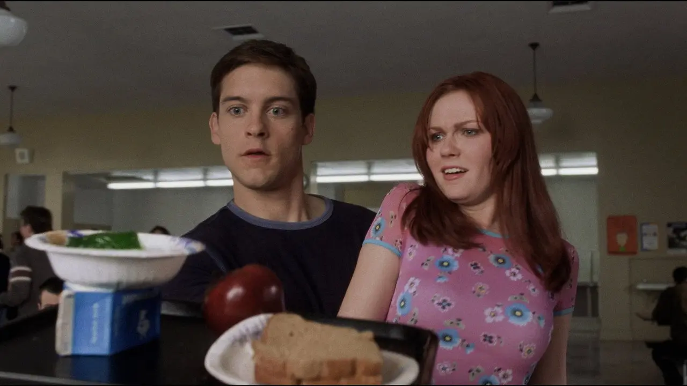
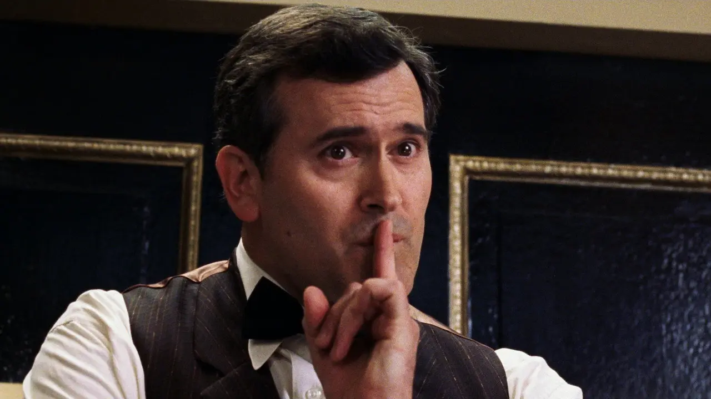

156 tomas para una bandeja
El momento en que Peter atrapa toda la comida de Mary Jane en su bandeja se hizo de verdad, con la mano de Tobey Maguire pegada a la bandeja. Hicieron falta 156 tomas y unas 16 horas de rodaje.
Escenas que se resolvieron sin computadoras, cambios de último momento y apariciones especiales: la trilogía está llena de historias que no se ven en pantalla.

El momento en que Peter atrapa toda la comida de Mary Jane en su bandeja se hizo de verdad, con la mano de Tobey Maguire pegada a la bandeja. Hicieron falta 156 tomas y unas 16 horas de rodaje.
El primer avance mostraba a un helicóptero atrapado en una telaraña tendida entre las Torres Gemelas. Tras los atentados del 11 de septiembre de 2001, Sony lo retiró junto con el póster que también mostraba las torres.
En los cómics, Peter inventa unos lanzatelarañas mecánicos. Las películas usan telarañas orgánicas que salen de sus muñecas, una idea que venía de un tratamiento de James Cameron. Fue uno de los cambios más discutidos por los fans.
Willem Dafoe insistió en usar él mismo el traje del Duende Verde, porque creía que un doble no podría transmitir el lenguaje corporal del personaje. Ponerse las 580 piezas del traje llevaba media hora.
Antes del rodaje, una lesión en la espalda puso en duda la participación de Maguire, y el estudio llegó a elegir a Jake Gyllenhaal como reemplazo. Finalmente Maguire se recuperó y volvió al papel.
Muchos planos de los brazos del Doctor Octopus no son digitales: se construyeron brazos reales de goma espuma, de casi dos metros y medio, y cada uno necesitaba cuatro personas para moverlo. La computadora se usó sobre todo cuando los brazos cargan a Octavius.
Para las tomas de fondo de la pelea del tren, el equipo filmó en el tren elevado de Chicago, con dieciséis cámaras montadas en los vagones. Por eso el recorrido no coincide con ninguna línea real de Nueva York.
Para animar al Hombre de Arena, el equipo de efectos probó doce tipos de arena real y estudió cómo se movía cada uno antes de recrearla por computadora. En las escenas en las que los actores quedan enterrados, se usó marlo de maíz molido, más seguro que la arena.
Sam Raimi había criticado a Venom por su falta de humanidad y no pensaba incluirlo. Lo sumó a pedido del productor Avi Arad, lo que explica en parte por qué la película tiene tantos villanos.
Tobey Maguire no quería bailar en la escena del club de jazz. Aceptó después de que la coreógrafa Marguerite Derricks le mostrara algunos pasos de Fred Astaire.
Spider-Man 4 tenía fecha de estreno para mayo de 2011 y a Raimi como director. En enero de 2010, Sony la canceló y decidió reiniciar la saga, que volvió en 2012 con Andrew Garfield.

Dos apariciones especiales se repiten en las tres películas:
Ocho preguntas sobre las curiosidades de esta página. Elegí una respuesta en cada una y, al final, tocá "Ver resultado".